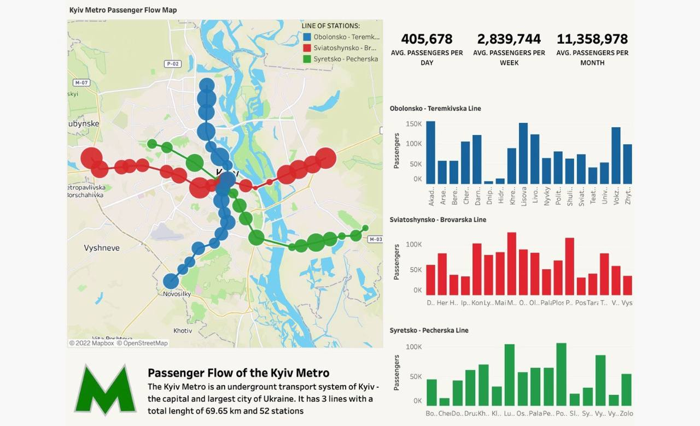
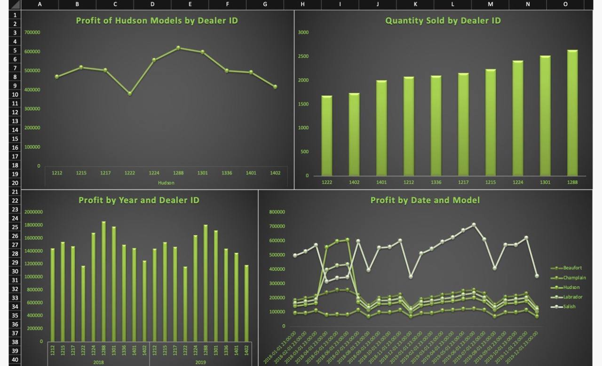

Hi, I'm Volodymyr.
My job consists in helping companies and researchers to analyse their datasets. I am skilled for most data-science steps: data pre-processing, data analysis, data visualization and results communication.
I am a open source believer since I think with sharing solutions we can achieve a lot more as a community. Therefore I prefer to use R and Python for my daily work.
On my website you can find some examples of my projects, most of them are links to a jupyter notebook or interactive visualization.
Have fun in browsing through the content and thank you for visiting!
I have taken my first steps towards acquiring skills related to data analyst by doing the IBM Data Analyst Professional Certificate course on Coursera. The last module of this course is a capstone project. This project is about using data analyst toolset on a real-life problem and demonstrating the creation of value by applying the learned skills. The analysis was performed in Python. If you are interested in the details, then you can find a more detailed report and the Jupyter notebook by clicking the "View Project" button.
In this project, I analyze the company Bellabeat, a high-tech manufacturer of products focused on women's health. Bellabeat aims to become a bigger player in the global market. My task is to focus on one of Bellabeat's products and analyze other companies' smart device data to understand how customers use their smart devices. Thanks to the analysis, I was able to determine the company's marketing strategy and give some advice on how to improve it. You can learn more about the project by clicking the "View Project" button.
For this project, I will assume the role of a Data Analyst working. I am retrieving financial data such as historical stock prices and quarterly earnings reports from various sources using Python libraries and webscraping of popular stocks. After collecting this data, I visualize it to identify patterns or trends. The stocks I analyze in this project are Tesla, Amazon, AMD, and GameStop. You can learn more about the project by clicking the "View Project" button.
This project demonstrates my data analysis and visualization skills in Python. In this project, I analyze data from the US labor market, namely the Data Analytics sector. The project shows data analyst jobs - salaries, companies and sectors where this job is most common. Pandas, NumPy, matplotlib.pyplot and other libraries were used to work with the data. You can learn more about the project by clicking the "View Project" button.

This project is a demonstration of my data visualization and dashboard building skills in Tableau. You can learn more about the project by clicking the "View Project" button.

This project is a demonstration of my data visualization and dashboard building skills in Microsoft Excel. You can learn more about the project by clicking the "View Project" button.